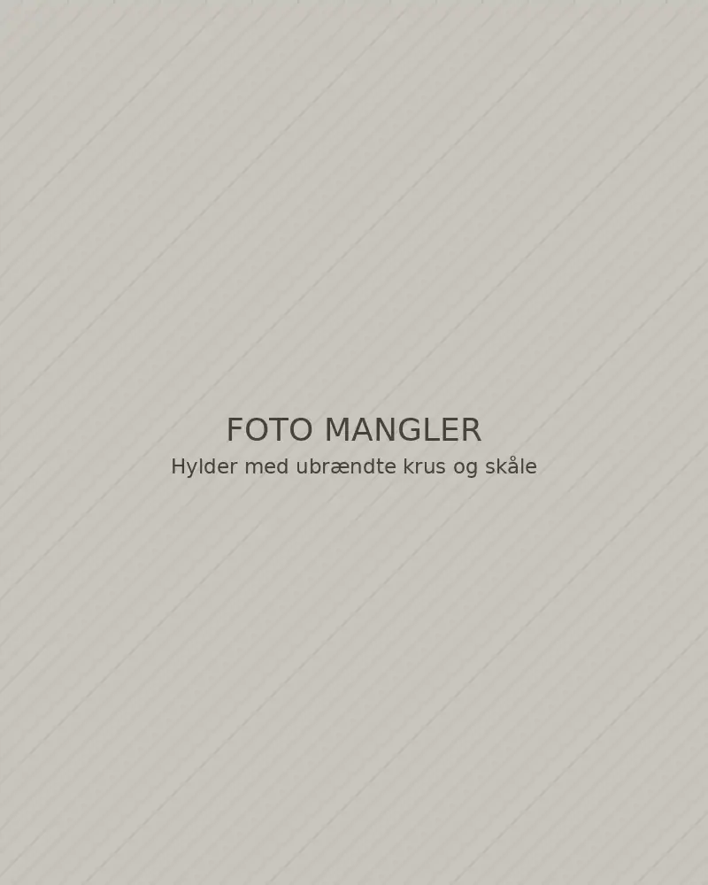

Keramikværksted i Odder
Stentøj til hverdagsbordet
Krus, skåle og tallerkener, drejet og glaseret i små serier på værkstedet. Alt tåler opvaskemaskine.
8 stykker i sortimentet3 glasurerPakkes i genbrugspap
 Illustrativt billede
Illustrativt billede
Sortiment
Hvert stykke er drejet i hånden, så mål og glasur varierer en smule fra stykke til stykke.
-
-

-

-

-

-

-
 Udsolgt
Udsolgt -


Illustrativt billedeVærkstedet
Drejet, tørret og brændt to gange
Alt bliver drejet på værkstedet i Odder. Når tingene er tørre, bliver de skrøjtbrændt, glaseret i hånden og brændt igen ved 1.240 grader. Så bliver stentøjet tæt og tåler daglig brug.
Vi brænder ovnen cirka hver tredje uge. Er noget udsolgt, kommer det typisk igen ved næste brænding.
- Ler
- Rødbrændende stentøj
- Glasurer
- Sand, skovgrøn og blågrå
- Pleje
- Opvaskemaskine og mikroovn. Fadet tåler også ovn.
Levering og retur Eksempeltekst
I en rigtig webshop står butikkens egne betingelser her. Teksterne nedenfor viser, hvad den slags information typisk dækker.
Levering
Til pakkeshop for 49 kr. Fri fragt ved køb over 800 kr. Afsendes inden for 2–3 hverdage.
Afhentning
Hent gratis på værkstedet efter aftale. Du får besked, når pakken er klar.
Retur
Her ville butikkens returregler stå, fx hvordan man returnerer, og hvem der betaler fragten.